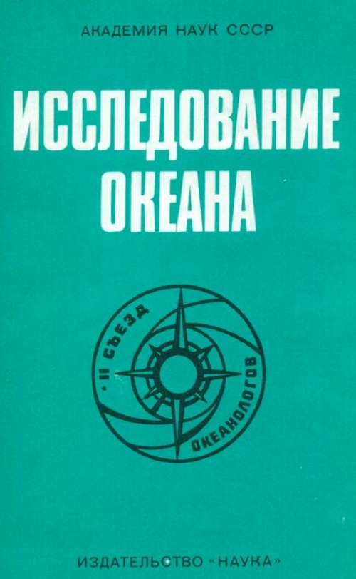
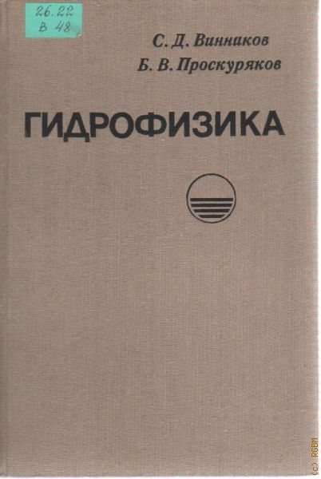
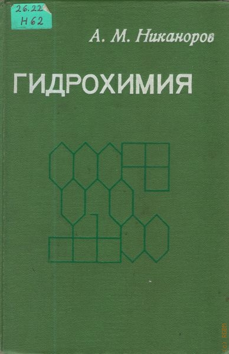

Библиотека документаций

Исследования океана
В сборник включены статьи-доклады на пленарных заседаниях II Всесоюзного съезда океанологов (декабрь 1982 г.),
который
имел целью подвести итоги достижений океанологии за период времени, прошедший после I съезда (июнь 1977 г.), и
наметил
первоочередные задачи в исследовании Мирового океана на ближайшее будущее.

Гидрофизика
В книге рассматриваются молекулярная физика воды в трех ее агрегатных состояниях, основные физические свойства воды,
льда, снега, основные положения теплообмена применительно к задачам гидрологии, а также различные физические процессы и
явления, протекающие в воде, льде, снеге и почвогрунте. Излагаются методы теплотехнических расчетов водоемов и водотоков
для летнего и зимнего периодов года.

Гидрохимия
С позиций общей экологии изложены проблемы, имеющие глобальный характер и связанные с нарастанием экологической
напряженности в мире: антропогенные изменения климата и проявления парникового эффекта, истощение озонового слоя,
загрязнение окружающей среды (в том числе химическое, токсическое и радиоактивное, а также не изучавшиеся ранее виды
загрязнении — биологическое и «генетическое»).